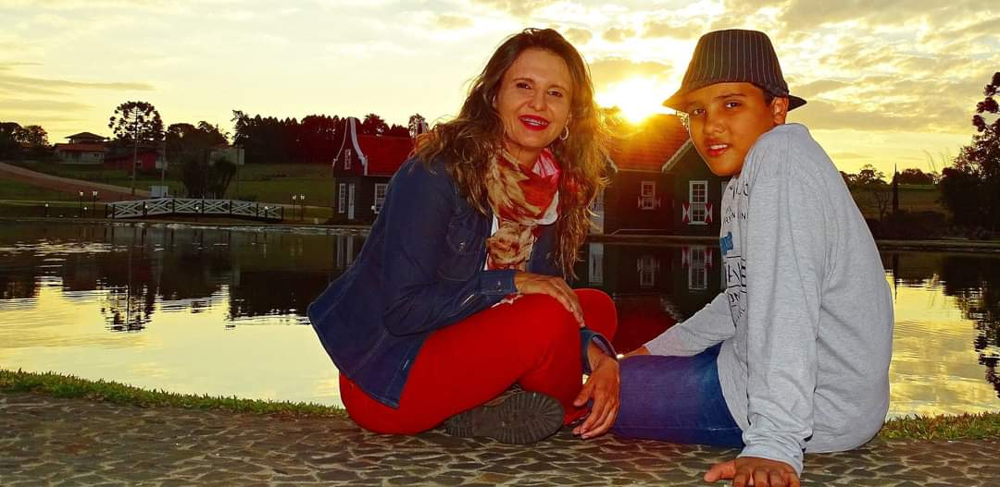
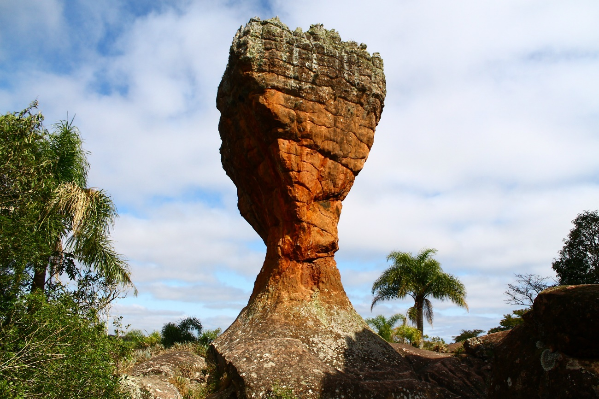
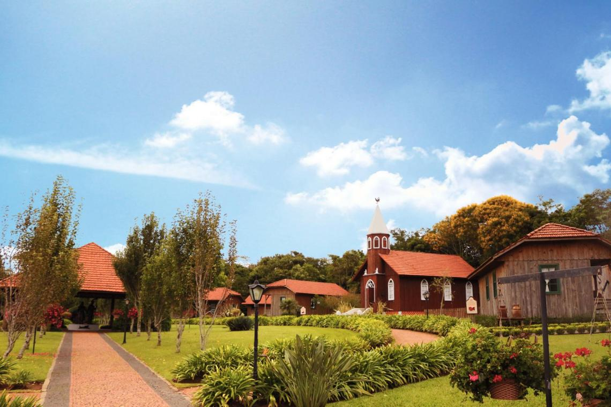
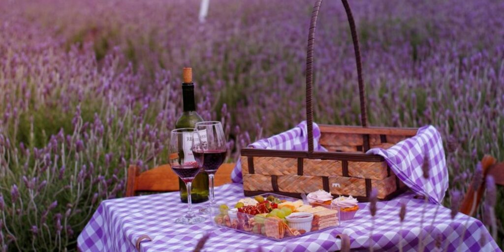
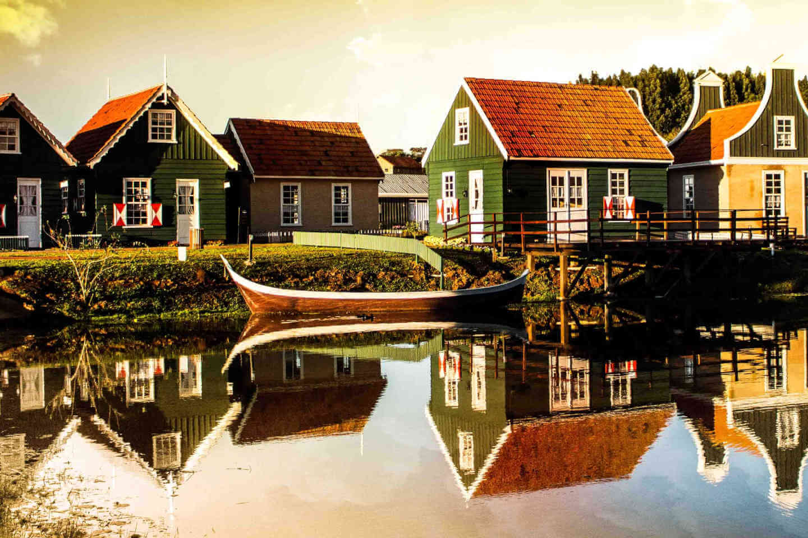

Detalhes do Roteiro
Vila Velha - Encante-se com as milenares formações rochosas do Parque Estadual de Vila Velha, localizado a aproximadamente 90km de Curitiba. O passeio contempla a visita aos arenitos e convida o visitante a usar a imaginação e associá-los com objetos de nosso dia-a-dia. A mais famosa formação é conhecida por ter o formato de uma taça gigante! Você também será conduzido para visitar a Lagoa Dourada e as furnas, profundas cavas formadas por um fantástico rio subterrâneo. Logo após parada para almoço e seguimos...
Lavandário Het Dorp - também conhecido como "Vilarejo Holandês", é uma atração turística localizada em Carambeí. Este espaço oferece aos visitantes a oportunidade de explorar campos de lavanda, realizar piqueniques, participar de ensaios fotográficos e conhecer o Museu da Lavanda. O local também é parte da Rota Turística da Lavanda no Paraná, que abrange municípios como Carambeí, Palmeira, Toledo, Londrina e Umuarama. Logo após seguimos...
Parque Histórico de Carambeí - localizado no município de Carambeí, Paraná, é um dos maiores museus a céu aberto do Brasil, com mais de 100.000 metros quadrados dedicados à preservação da memória da imigração holandesa na região dos Campos Gerais. Inaugurado em 2011, o parque oferece uma rica experiência cultural, histórica e educativa, ideal para visitas individuais ou em grupo.
Logo após, finalizamos nosso passeio na Frederica's Koffiehuis, o qual é uma tradicional confeitaria localizada em Carambeí, que oferece uma experiência única inspirada nos cafés familiares europeus. Desde 2007, a casa se dedica à arte de encantar seus visitantes com doces sabores, destacando-se por suas mais de 70 variedades de tortas doces e salgadas.
Serviços inclusos no pacote:
Translado privativo in/out saindo de Curitiba e Morretes;
Ingresso de acesso ao Parque Vila Velha;
Ingresso Parque da Lavandas;
Ingresso Parque Carambeí;
Tarifas
| N° de pessoas | Guia bilíngue | Adulto | Criança |
|---|---|---|---|
| 2 a 8 | Não | R$ 979.00 | R$ 850.00 |
| 2 a 8 | Sim | R$ 1.150.00 | R$ 979.00 |
Galeria de Fotos





